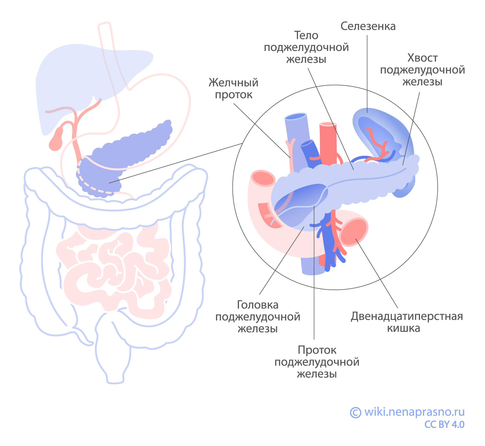
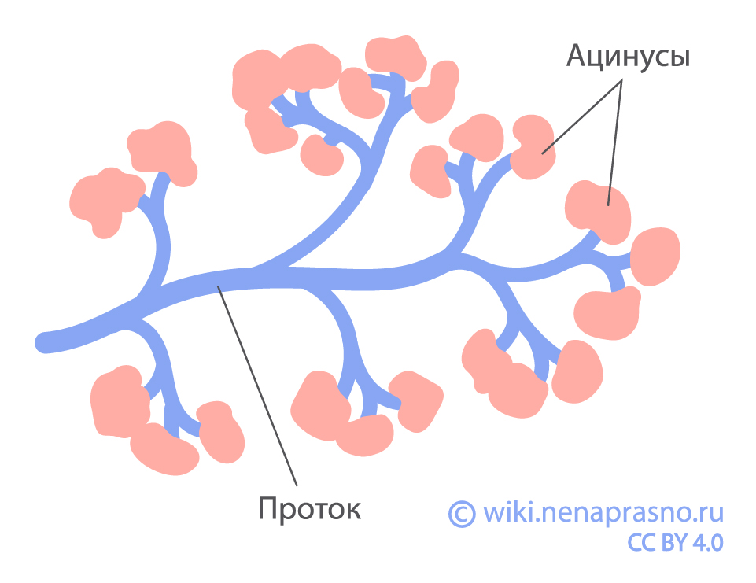

Функции поджелудочной железы
Поджелудочная железа — дольчатый орган продолговатой формы длиной 12-15 см. Она расположена позади желудка, больше слева, на уровне первого поясничного позвонка. Спереди граничит с задней стенкой желудка, снизу — с петлями тонкой кишки и поперечной ободочной кишкой, слева — с левой почкой и селезенкой, сзади — с почечными артерией и веной, нижней полой веной, аортой. Головку железы тесно охватывает двенадцатиперстная кишка.
Поджелудочная железа расположена глубоко, поэтому большая ее часть не покрыта брюшиной — тонкой оболочкой, которая покрывает внутренние органы. Брюшиной покрыт только хвост поджелудочной железы.
Поджелудочную железу делят на три основные части:
- Головка — самая широкая часть поджелудочной железы, приближается по форме к неправильному четырехугольнику. Изгиб двенадцатиперстной кишки охватывает головку в виде подковы.
- Тело — средняя, самая большая часть органа. Расположено по центру, позади желудка, глубоко в тканях. Это важно при проведении хирургического лечения.
- Хвост — левый конец железы, расположенный рядом с верхушкой селезенки. Это единственная часть поджелудочной железы, которая покрыта брюшиной.
Приблизительно в 75% всех случаев рак развивается в головке или шейке железы, в 15–20% — в теле, примерно в 5–10% случаев — в хвосте.
В зависимости от того, в каком отделе находится опухоль, выбирают разный объем операции. Если опухоль расположена в головке, выполняют панкреатодуоденальную резекцию (операцию Уиппла). Если в теле или хвосте, проводят дистальную резекцию. Подробнее об анатомических особенностях рака поджелудочной железы читайте здесь.
В зависимости от расположения опухоли она может вызывать разные симптомы, поскольку железа в разных местах граничит с разными органами.
Вся железа покрыта тонкой капсулой. От этой капсулы в толщу железы отходят перегородки, разделяя орган на дольки. Дольки состоят из ацинусов — скоплений мелких округлых клеток, вырабатывающих пищеварительные ферменты. По выводным протокам это содержимое попадает в главный проток поджелудочной железы (Вирсунгов проток). Проток проходит через всю толщу железы от хвоста до головки, соединяется с общим желчным протоком или самостоятельно открывается в двенадцатиперстную кишку.
Функции поджелудочной железы
Поджелудочная железа выполняет экзокринную (пищеварительную) и эндокринную (гормональную) функции.
- Экзокринная функция — это выделение пищеварительных ферментов. Ферменты участвуют в переваривании съеденной пищи, расщепляя углеводы, жиры и белки в двенадцатиперстной кишке. В поджелудочной железе эти ферменты находятся в неактивном состоянии. Попадая в двенадцатиперстную кишку по протоку поджелудочной железы, они активируются и участвуют в пищеварении.
- Эндокринная функция — это выработка гормонов (активных веществ, которые регулируют различные процессы в организме). Эндокринные функции выполняют разные типы клеток, которые расположены преимущественно в хвосте железы. Каждый тип клеток вырабатывает свой гормон. Основные гормоны поджелудочной железы — это инсулин и глюкагон. Они регулируют уровень глюкозы в крови. Также поджелудочная железа вырабатывает соматостатин, который препятствует высвобождению инсулина и глюкагона.
В поджелудочной железе есть разные типы клеток, поэтому могут возникать два разных типа опухолей. Из экзокринных клеток развиваются аденокарциномы, из эндокринных — нейроэндокринные опухоли. Диагностика и подходы к лечению этих опухолей сильно различаются. Примерно в 80% случаев рак развивается именно в экзокринной части.
Лимфатические узлы и лимфоотток поджелудочной железы
Лимфатические узлы — это маленькие (до 1 см) бобовидные скопления иммунных клеток. Их основная функция — защита организма от чужеродных агентов, например, микробов или опухолевых клеток. Лимфатические узлы связаны между собой лимфатическими сосудами, по которым течет специальная жидкость — лимфа. Лимфа забирает от органов все «ненужное» и относит к лимфатическим узлам. Поэтому лимфатические узлы по сути являются первым препятствием на пути распространения опухолевых клеток по организму. От того, есть ли опухолевые клетки в лимфатических узлах, зависят стадия и прогноз заболевания. Подробнее об устройстве лимфатической системы можно почитать здесь.
Вокруг поджелудочной железы, как и вокруг других органов, много лимфатических узлов. От расположения опухоли зависит, в какие узлы могут распространиться опухолевые клетки. Например, от головки поджелудочной отток идет в лимфоузлы, расположенные рядом с желудком и печенью, от тела и хвоста — в лимфоузлы возле печеночной и селезеночной артерий, аорты. Знать окружающие поджелудочную железу лимфатические узлы необходимо, чтобы планировать хирургическое лечение.
Выводы
- Поджелудочная железа — это орган пищеварительной системы, который вырабатывает пищеварительные ферменты и гормоны, участвующие в обмене веществ.
- Поджелудочная железа состоит из головки, тела и хвоста. Расположение опухоли может влиять на симптомы заболевания и объем операции.
- Отток лимфы от поджелудочной железы происходит по лимфатическим сосудам в лимфатические узлы, расположенные рядом.